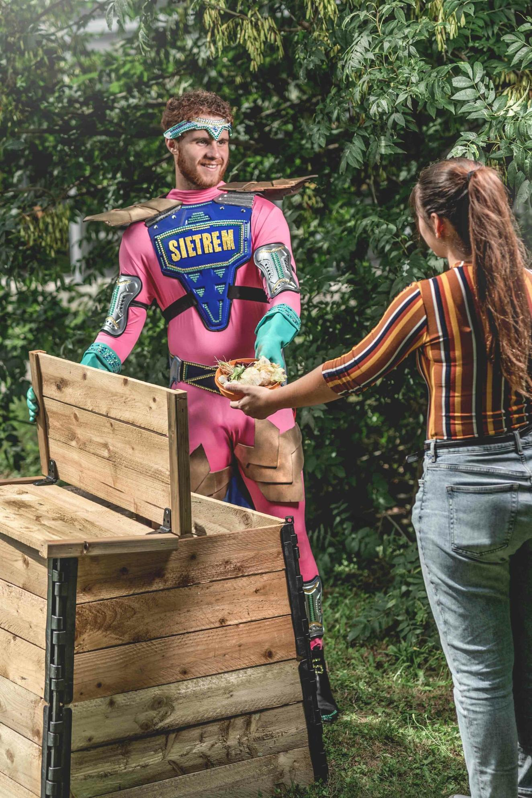
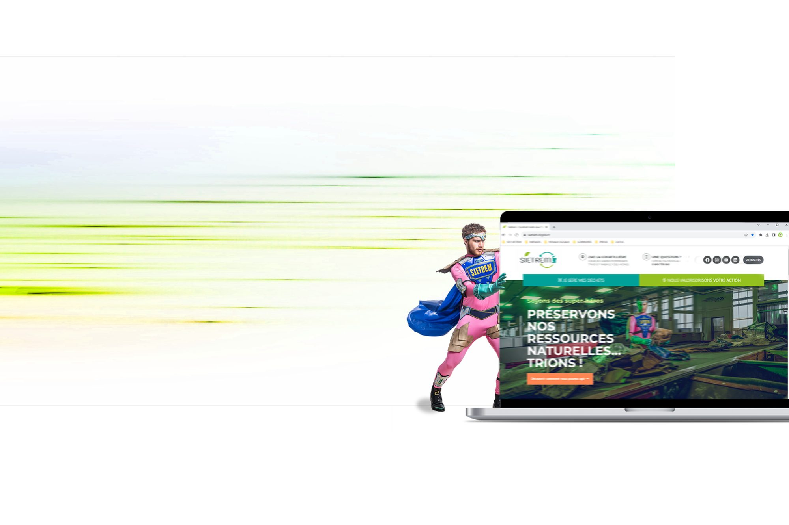

Un syndicat public de gestion des déchets, ça ne fait pas rêver. Et pourtant, ça touche tout le monde.
Lead stratégie & création, je pilote une refonte totale sur près de deux ans. Logo, charte graphique, site internet, réseaux, magazine, bacs, signalétique : tout est repensé à la main, de A à Z, pour recréer de la cohérence et de la lisibilité.
Au cœur du nouveau territoire, une saga photo de super-héros : chacun gardien d'une filière — tri sélectif, déchetteries, compost, anti-gaspi, encombrants. Costumes, casting, prises de vue dans les vrais lieux, avec les vrais agents.
Le résultat : un acteur essentiel qui, enfin, ressemble à ce qu'il est.

